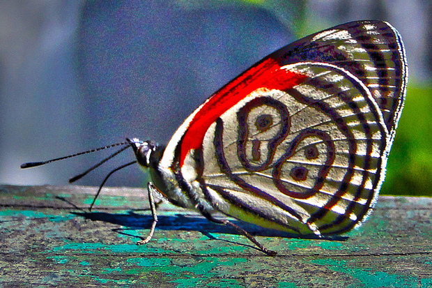
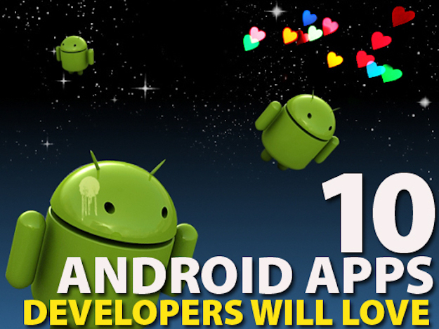

DoppioJVM brings JVM apps to the browser
The project for running JVM code in a browser via JavaScript is still in beta
Expanding possibilities for using conventional programming languages on the Web, the DoppioJVM project brings JVM programs to the browser. Still just a beta-quality research project, open source DoppioJVM leverages the Doppio JavaScript runtime to run unmodified JVM programs in the browser, hooking up with Java APIs that interact with OS resources, said developer John Vilk, a student at the University of Massachusetts.
Read more
New JavaScript library brings Java to browsers without applets
JavaPoly.js imports existing Java code and invokes it directly from JavaScript
Melding the worlds of Java and JavaScript, JavaPoly.js extends native Java Virtual Machine support to browsers via a library serving as a polyfill.
Read more
Java 101: Polymorphism in Java
Use subtype polymorphism to execute different forms of the same method
Our universe exhibits many examples of entities that can change form: A butterfly morphs from larva to pupa to imago, its adult form. On Earth, the normal state of water is liquid, but water changes to a solid when frozen, and to a gas when heated to its boiling point. This ability to change form is known as polymorphism. Modeling polymorphism in a programming language lets you create a uniform interface to different kinds of operands, arguments, and objects. The result is code that is more concise and easier to maintain.
Read more
10 Android apps developers will love
From full-blown IDEs to essential resource utilities, these Android apps bring powerful programming features to smartphones and tablets
Read more
Open source Java projects: Apache Phoenix
Use standard SQL queries in a NoSQL database with Phoenix
Apache Phoenix is a relatively new open source Java project that provides a JDBC driver and SQL access to Hadoop's NoSQL database: HBase. It was created as an internal project at Salesforce, open sourced on GitHub, and became a top-level Apache project in May 2014. If you have strong SQL programming skills and would like to be able to use them with a powerful NoSQL database, Phoenix could be exactly what you're looking for!
Read more
Developers weigh JSON, security proposals for Java EE 8
At JavaOne, Oracle reveals the numerous proposals under consideration for inclusion in Java EE 8, due in 2017
Java EE (Enterprise Edition) 8 is not due until 2017, but given the multitude of proposals Oracle is considering for inclusion, the company will need all that time to sort out the revision. For now, HTTP/2, Model-View Controller, and security capabilities will likely make the cut.
Read more